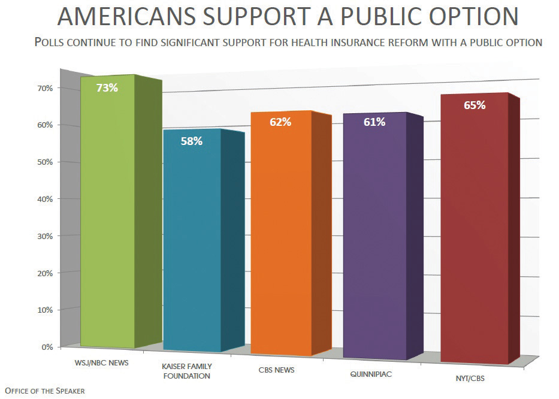

After reading this section, you should be able to answer the following questions:
Public opinion polling has a long history in the United States. Polls are ubiquitous in American political life. In 2007, there were nearly 5,500 polling organizations in the United States, an increase of over 1,500 organizations in ten years.Kirby Goidel, “Public Opinion Polling in a Digital Age: Meaning and Measurement,” in Political Polling in the Digital Age, ed. Kirby Goidel (Baton Rouge: Louisiana State University, 2011), 11–27. Every day the public is polled about topics ranging from their views about taxes and the federal budget, their opinions about the environment and global warming, and whether or not a principal has the right to prevent students from bringing their lunches to school.
Polls vary greatly in terms of their quality, content, and purpose. Reliable public opinion data are gathered by reputable commercial polling organizations, nonpartisan think tanks, academic institutions, government agencies, and news organizations. Misleading information about public opinion can result from quick polls that do not employ appropriate data-gathering techniques.
Public opinion polls date back to the early days of the American republic. From the outset, polls were linked closely with newspapers. The Harrisburg Pennsylvanian conducted the first informal “straw pollAn informal poll, often used to gauge opinions about candidates, that is administered haphazardly and without attention to proper sampling methods.” in 1824 that incorrectly predicted Andrew Jackson as the winner over John Quincy Adams in the presidential election.Robert S. Erikson and Kent L. Tedin, American Public Opinion, 8th ed. (New York: Longman, 2011). Early straw polls were administered haphazardly and without concern for drawing a proper sample, often right after people had cast their ballots in elections or even when they were checking into a hotel. They were notoriously inaccurate, yet they became a popular feature of newspapers and magazines, which treated poll data as a source of news much like today.
Straw polls were sponsored by publishers as a gimmick to attract readers who would fill out mail-in ballots that included subscription offers. Over eighty straw polls were conducted during the 1924 presidential election, six of which were national polls. Newspapers also conducted polls on pressing issues of the day, such as whether or not people favored Prohibition, the constitutional ban on alcohol. Coverage of these polls in print publications generated thousands of column inches.Robert S. Erikson and Ken L. Tedin, American Public Opinion, 8th ed. (New York: Longman, 2011).
By the 1920s, market researchers had begun to use scientific polls that employed samples representative of the population to ascertain consumer product preferences. They used polls to discover everything from what kinds of magazine stories readers enjoyed most to what automobiles people preferred.Kathleen Morgan Drowne, The 1920s (Westport, CT: Greenwood Press, 2004). Commercial pollsters applied market research techniques to determine what candidates voters favored, how satisfied the public was with the way the president was doing his job, and how people felt about the pressing issues of the day.
Despite these advances, magazines and newspapers continued to use unscientific straw polls, which were less expensive to administer and contributed to the profitability of the publication. The problems associated with straw polls came to a head in the 1936 presidential election when the Literary Digest, a popular magazine with a large circulation, incorrectly predicted the presidential election outcome, prompting the public to lose faith in polls. For a time after the Literary Digest debacle, newspapers shied away from highlighting polls in their coverage.
The Literary Digest Poll
In polling, more subjects does not necessarily yield better results. This lesson was learned all too well by the Literary Digest in 1936. Founded in 1890, the Literary Digest was a venerable general interest magazine that catered to an educated, well-off clientele. In 1916, the magazine initiated a presidential election poll that became a popular feature. Subscribers mailed in sample ballots indicating their preference in the election. The poll correctly predicted that Woodrow Wilson would be the winner, and the magazine’s poll went on to successfully call the next four elections. Newspapers gave substantial coverage to the poll, which drove up the magazine’s readership. In 1932, James A. Farley, chairman of the Democratic National Committee, was widely quoted as saying, “Any sane person cannot escape the implication of such a gigantic sampling of popular opinion as is embraced in the Literary Digest straw vote.… It is a Poll fairly and correctly conducted.”
The magazine set out to launch its most ambitious poll ever in 1936. Over 10 million postcards were mailed to Literary Digest subscribers, people on automobile registration lists, and names in telephone directories, of which 2.4 million were returned. The Literary Digest issued its predictions in an article boasting that the figures represented the opinions of “more than one in every five voters polled in our country” scattered throughout the forty-eight states. The results indicated that Republican candidate Alfred Landon would defeat Franklin Roosevelt, receive 57 percent of the popular vote, and carry thirty-two states in the Electoral College. Roosevelt won by a landslide, commanding 61 percent of the popular vote and winning in all but two states.
While the magazine made no claims of infallibility, its methodology was heavily flawed. The sample was biased toward Republican-leaning voters who could afford telephone service, cars, and magazine subscriptions. The volunteers who tabulated the results were not carefully trained, which introduced additional error into the calculations. The backlash from the errant results was monumental. The Literary Digest went bankrupt, and the public’s faith in polls was shattered.
Literary Digest 1936 election issue. The 1936 Literary Digest straw poll that incorrectly predicted that Alf Landon would defeat Franklin Roosevelt by almost 20 percentage points in the presidential election marked the end of the era of straw polls and the beginning of the use of scientific polls in reporting.
Commercial pollsters using scientific techniques correctly predicted that Roosevelt would defeat Landon in the 1936 election. These pollsters conduct polls for clients for a profit. The Gallup Poll administered personal interviews with a quota sampleA method of selecting survey participants that involves choosing subjects on the basis of their fitting into particular demographic categories, such as sex and age groups. of people who fit into particular demographic categories, such as sex and age groups. Gallup correctly predicted the winners of the 1940 and 1944 presidential contests. However, during the 1948 election, three major pollsters—Gallup, Roper, and Crossley all incorrectly predicted that Republican presidential candidate Thomas Dewey would defeat Democratic candidate Harry Truman. The quota sampling method used by these pollsters was problematic and was replaced by probability samplingA method of selecting survey participants at random., in which subjects are randomly selected to take part in a poll.Barbara A. Bardes and Robert W. Oldendick, Public Opinion: Measuring the American Mind (Belmont, CA: Wadsworth/Thompson Learning, 2006).
Dewey Defeats Truman
The 1948 presidential election did not start off well for Democratic candidate Harry S. Truman. As vice president, Truman was sworn in as president when Franklin Roosevelt died less than three months into his fourth term. Truman was forced to deal with a variety of controversial issues, including the decision to drop atomic bombs on Hiroshima and Nagasaki, which he believed would end World War II in the Pacific. Newspapers labeled Truman a “little man,” a tag that resonated with the public who contrasted him unfavorably to the larger-than-life Roosevelt.
The Democrats were highly factionalized when they met in Philadelphia for their national nominating convention. They attempted unsuccessfully to recruit popular war hero Dwight D. Eisenhower to be their candidate. When the convention adopted a strong civil rights platform, Southern delegations bolted and nominated their own candidate, Strom Thurmond of South Carolina. Liberals who disapproved of Truman’s policies formed the Progressive Party and nominated Henry Wallace of Iowa as their candidate. In the end, Truman became the nominee with Senator Alben Barkeley of Kentucky as his running mate. The pair was faced with an unenthusiastic constituency.
In contrast, the Republican Party united behind Thomas E. Dewey, the popular governor of New York. Dewey had been the Republicans’ candidate in the 1944 presidential campaign, and had come close to Roosevelt in the popular vote. California Governor Earl Warren, future chief justice of the Supreme Court, was the vice presidential candidate.
Pollsters and the press anticipated that Dewey would win by a landslide. On September 9, 1948, nearly two months prior to the election, noted pollster Elmo Roper declared that there would be no more Roper Polls predicting the outcome: “My whole inclination is to predict the election of Thomas E. Dewey by a heavy margin and devote my time and efforts to other things.”Elmo Roper as quoted in David McCullough, Truman (New York: Simon & Schuster, 1992), 657.
Normally, incumbents such as President Truman run low-key campaigns, and challengers such as Governor Dewey work hard to win. Dewey campaigned like a front-runner, remaining aloof and dignified while avoiding discussions of controversial issues. Roles were reversed in the 1948 presidential campaign. Truman, realizing he had nothing to lose, launched an aggressive “Whistle Stop” campaign. Traveling in a special Pullman railroad car nicknamed the Ferdinand Magellan, after the explorer who circumnavigated the world, Truman covered 32,000 miles and gave 355 rousing speeches. At each stop, Truman would introduce his family to the crowd, answer questions, and shake hands. As he fought his way through the campaign, he acquired the slogan “Give ‘em hell, Harry!”
Even as Truman’s campaign picked up steam and polls showed the gap between the candidates was closing, the press refused to concede that he could win. Newsweek polled fifty political journalists a month before the campaign, and all of them stated that Dewey would win. Truman had the support of only 15 percent of the nation’s newspapers.American Treasures of the Library of Congress, “Dewey Defeats Truman” (Washington, DC: Library of Congress, American Memory Collection, 2003). By Election Day, polls indicated that Truman might pull an upset, but journalists stuck to their story that Dewey would win by a landslide. Reports filtered in throughout Election Night that Truman was leading in the popular vote, but the press continued to report that he could not emerge victorious. The Chicago Tribune was so certain that Truman would lose, the headline of the early edition proclaimed “DEWEY DEFEATS TRUMAN.” The paper had already been delivered, and the Tribune dispatched employees to retrieve the papers from newsstands and homes, but many remained in the hands of readers. Traveling by train from his home state of Missouri to Washington, DC, Truman made a brief stop in St. Louis, where he was presented with one of the papers bearing the infamous headline. Truman held up the paper and quipped, “This is for the books.”David McCullough, Truman (New York: Simon & Schuster, 1992).
“DEWEY DEFEATS TRUMAN.” Truman’s victory, as immortalized in this enduring image, is one of the biggest comebacks in American elections.
Source: Photo courtesy of Dave Winer, http://www.flickr.com/photos/scriptingnews/2544447858/.
Survey research organizations associated with academic institutions emerged in the 1940s with the establishment of the National Opinion Research Center (NORC) at the University of Chicago and the Survey Research Center (SRC) at the University of Michigan. These organizations and others like them, such as the Roper Center at the University of Connecticut, field and archive detailed surveys that provide researchers with a wealth of data to use in studies to gain a deeper understanding of the public’s political attitudes and behavior. Nonpartisan survey research organizations, such as the Pew Research Center and the Field Poll in California, provide data to news organizations and academics. Commercial pollsters, including Gallup and IBOPE Zogby International, provide polling services to clients and also share their data with the press, scholars, and the public through their websites.
The amount of polling data available today from commercial polling firms, academic survey research organizations, campaign organizations, trade associations, interest groups, media outlets, and online sources is almost overwhelming. There are great variations in the type and quality of polling data. A public opinion survey fielded by a reputable organization using proper social scientific techniques differs greatly from a quick pollAn online poll, usually consisting of one or two questions, that is asked of a nonrepresentative, self-selected sample of respondents. consisting of one or two questions administered online to whoever is willing to take it.
Questionnaires used to measure public opinion include a variety of question types. Closed-ended questionsItems on a questionnaire that provide respondents with a fixed number of options about a topic from which they can choose the one that best fits their position. provide respondents with a fixed number of options about a topic from which they can choose the one that best fits their position. A closed-ended question frequently asked to gauge people’s feelings about the direction in which the country is headed is “Generally speaking, would you say things in this country are heading in the right direction, or are they off on the wrong track?” Respondents must select one of the options: the right direction or the wrong track. Closed-ended questions are easier and less time-consuming to analyze, although they limit the respondent’s ability to express their opinions to the choices offered by the researcher. Open-ended questionsItems on a questionnaire that allow respondents to reply to a question in their own words. do not provide fixed options but instead allow respondents to reply to a question in their own words. This type of question elicits more information from respondents and can be useful in gaining insight into sensitive topics. The drawbacks of open-ended questions are that people may not want to take the time to answer them and they are more time-consuming for pollsters to analyze. An open-ended question about the direction in which the country is headed would ask people to express their own views in response to the question “How do you think things are going in this country?”
Most polls provide snapshots of people’s opinions at a particular point in time. Other polls track opinions over time in order to determine if people’s views remain stable or change. In rare cases, studies have tracked the opinions of the same groups of people over years, even decades. The views of the women who attended Bennington College in the 1930s were tracked through the 1980s. The study revealed that the college experience changed some of the women’s attitudes and that the views acquired in college remained stable over time.Duane F. Alwin, Ronald L. Cohen, and Theodore M. Newcomb, Political Attitudes over the Life Span: The Bennington Women after Fifty Years (Madison: University of Wisconsin Press, 1991).
The terms “poll” and “survey” often are used interchangeably, yet there are distinctions between them. A public opinion pollA short questionnaire administered to a sample of people to ascertain the views of a larger population usually conducted by a commercial organization. is typically conducted by a commercial organization working for a profit. A poll generally consists of a short questionnaire administered over a brief period of time to a sample of between six hundred and fifteen hundred people. A surveyA questionnaire typically administered by academic or government researchers to a representative sample people drawn from a larger population. most often is conducted by academic or government researchers. Surveys consist of longer questionnaires designed to examine the foundations and consequences of opinions in some detail. Researchers may administer the survey to thousands of subjects interviewed over an extended period of time.Michael W. Traugott and Paul J. Lavrakas, The Voter’s Guide to Election Polls, 2nd ed. (New York: Chatham House, 2000).
Scientific polls and surveys are considered to be the gold standard for measuring public opinion. They adhere to established procedures that help ensure the accuracy of their results, which includes using proper techniques for drawing a sample and designing questions. Scientific polls and surveys are administered to a sample of people who are representative of a larger population. The sample is drawn using probability sampling, meaning that each person in the population has a chance of being included in the sample. It is possible to get an accurate accounting of public opinion with a relatively small sample. A representative sample of twelve hundred people can accurately reflect the public opinion of the entire population of the United States. On the other hand, large samples that are not representative may not reflect public opinion accurately at all. Question wording is another important consideration when measuring public opinion. Questions need to be clearly stated, and they should not lead the respondent to choose one answer over another. A poorly worded question can be misunderstood by the respondent and ultimately can misrepresent the public’s viewpoints. Answer options that do not provide the public with clear alternatives also are problematic.
A Fox News poll taken after the 2011 State of the Union Address does not provide clear options for respondents.“Fox News Poll: Give Obama a Grade on the State of the Union,” Fox News, January 26, 2011, accessed April 5, 2011, http://foxnewsinsider.com/2011/01/26/poll-give-obama-a-grade-on-the-state-of-the-union. The answers are double-barreled because people can agree with one part of the answer but not the other. For option A, you may believe that President Obama gave a wonderful speech but not reconsider at least one item on his agenda. Similarly, for option B, you may agree that President Obama gave a good speech, but you may have changed your mind about his agenda.

Survey Question Wording
Source: Adapted from http://foxnewsinsider.com/2011/01/26/poll-give-obama-a-grade-on-the-state-of-the-union/.
There are many ways in which polls and surveys can be administered, including through face-to-face interviews, telephone interviews, mail questionnaires, and online questionnaires. Each of these methods has pros and cons. Face-to-face interviews are advantageous for administering long, complicated surveys, yet they are costly and subjects may be reluctant to talk to a stranger about their opinions. Telephone interviews are relatively easy to administer, but getting a representative sample has become more difficult as many polling organizations rely on landline telephone directories to recruit respondents, and people increasingly are relying on cell phones. Young people are not well represented in landline polls.Scott Keeter, “Public Opinion Polling and Its Problems,” in Political Polling in the Digital Age, ed. Kirby Goidel (Baton Rouge: Louisiana State University Press, 2011), 28–53. Mail questionnaires are a low-cost method that allows subjects privacy when answering questions, which can yield more accurate results. However, mail surveys often suffer from low response rate, as people simply opt out because the questionnaire is self-administered.Michael W. Traugott and Paul J. Lavrakas, The Voter’s Guide to Election Polls, 2nd ed. (New York: Chatham House, 2000).
Online polls have become a more popular option in recent years as the majority of the public has access to the Internet. According to the Pew Internet and American Life Project, 79 percent of American adults were online in May 2010. Studies indicate that online polls are no less reliable than other forms of polling. They have the advantage of being cost-effective, and allowing respondents privacy when answering questions. Online polls also provide opportunities for innovation, such as getting reactions to video clips of campaign ads. The limitation of online polls is that it is more difficult to get a representative sample using the Internet than with some traditional methods, because not all of the public is online. Also, online surveys are self-administered, and people can drop out before they are completed, especially if the questionnaire is lengthy.Scott Keeter, “Public Opinion Polling and Its Problems,” in Political Polling in the Digital Age, ed. Kirby Goidel (Baton Rouge: Louisiana State University Press, 2011), 28–53.
Exit pollsFace-to-face interviews with voters taken as they leave the voting booth to determine their candidate preference in the election and their positions on issues. are face-to-face interviews with voters taken as they leave the voting booth to determine their candidate preference in the election and their positions on issues. They are fielded in a small number of voting precincts with states with the goal of acquiring representative data. They are used to predict the outcomes of elections and to determine the characteristics of voters who supported particular candidates. Exit poll data can reveal, for example, who female, Latino, Republican voters favored in an election campaign.
Exit polls are a major component of the media’s Election Night coverage. Until 1992, each news network had its own in-house exit polling operation. To cut costs, an exit poll consortium, Voter News Service (VNS), was formed to provide data to all the major networks. VNS released the exit poll data that prompted the networks to prematurely declare the results of the 2000 presidential election, and the organization subsequently was disbanded. Exit poll data in the 2008 presidential election and 2010 midterm elections were provided to major television news organizations and the Associated Press by the National Election Exit Polls conducted by Edison Research.
Exit Polling
Read more about exit polling at http://www.edisonresearch.com/us_exit_polling.php.
News organizations use exit polls to declare a winner, sometimes when few of the actual returns from the voting precincts have been recorded. This practice has raised concerns, especially since the major television networks all rely on exit poll data from the same source—the National Election Exit Poll. While exit polls are often accurate, if the sample of voters is unrepresentative of the population, the survey questions are poorly written, or interviewers are not trained to properly administer the poll, the results can be wrong, as was the case in the 2000 presidential election.
Some scholars allege that media reports of exit polls can depress election turnout. When the media declare the winner in a presidential election on the basis of exit polls before the voting booths have closed across the country, people who have not yet voted may decide not turn out. Network television newscasts declared Ronald Reagan the winner of the 1980 presidential election on the basis of exit polls hours before the voting booths had closed on the West Coast. A controversy ensued around the allegation that West Coast voters were discouraged from casting a ballot because they felt their vote was irrelevant. The networks agreed voluntarily to refrain from declaring a winner in elections until after all the polls have closed nationwide—an agreement that has not always been followed.
A quick poll usually consists of one or two questions that are posted to a website, blog, discussion board, social media platform, or podcast. Quick polls have become standard features of websites of news organizations, political leaders, issue advocacy groups, political parties, candidates, bloggers, and even average citizens. They can be distributed through website sidebars, e-mail links, Facebook postings, and Twitter feeds. There are many platforms available that make it easy for just about anyone to field a quick poll. Quick polls also can be administered through robo-pollingAdministering automated polls by phone using a recorded voice to ask the question and requiring respondents to answer by pressing the touch pad on their telephone.—administering automated polls by phone using a recorded voice to ask the question and requiring respondents to answer by pressing the touch pad on their telephone.Mark Blumenthal, “The Case for Robo-Pollsters,” National Journal, September 14, 2009, accessed April 10, 2011, http://www.nationaljournal.com/njonline/the-case-for-robo-pollsters-20090914.
Quick polls do not conform to the established protocols for conducting scientific polls, and they generally are not reliable indicators of public opinion. They often use an unscientific convenience sampleRespondents to unscientific polls who are self-selected. of people who may see the poll posted online or have the link sent to them through e-mail. Most respondents to quick polls are self-selected, and they may have a strong interest in the topic. Often it is possible for people to register their views more than once, which can bias the outcome of the poll. Quick polls may generate many responses, but the results can be wildly inaccurate. In addition, quick poll questions can be designed in a way that elicits a particular response that is then used to promote a particular position. For example, a quick poll might seek to find support for bike lanes in cities by stating, “Seven out of ten Americans favor designating bike lanes in major cities. Do you favor or oppose designating bike lanes in your city?”
Quick polls can be a fun way to generate interest in political affairs. People can express their views easily, and they often get immediate feedback about where they stand compared to others. The results of quick polls often are revealed in visually appealing graphics. Reporters and bloggers use the results of quick polls to generate story lines and supplement the text of their pieces. However, quick polls can be misused when the results are interpreted as if they truly reflect public opinion rather than the views of the people who chose to take them.
Figure 7.4 Quick Polls
Quick polls provide snapshots of political opinion that are used by the media, interest groups, parties, and candidates.
Source: Photo courtesy of Leader Nancy Pelosi, http://www.flickr.com/photos/speakerpelosi/4012966154/.
A push pollNot a legitimate poll but a marketing technique disguised as a poll that is designed to influence respondents’ opinions about candidates and issues through leading questions. is a marketing technique used by political campaigns and issue advocacy groups to influence the opinions of respondents. Despite their name, push polls are not legitimate public opinion polls. They are a form of advertising masquerading in the form of an opinion survey. No one collects or analyzes data from a push poll. However, push polls can influence vote choice in campaigns by incorporating negative attacks on a candidate into the questions asked or associating a candidate with a particular issue position which may or may not be accurate.
Push polls were used against Republican candidate John McCain during the 2000 presidential primary. Voters in South Carolina were asked questions like “Would you be more or less likely to vote for John McCain for president if you knew he had fathered an illegitimate black child?” Push polls were used to target Democratic candidate Barack Obama in the 2008 presidential campaign. Voters in Ohio received phone calls from Opinion Access Corporation asking if they would be more or less likely to vote for Barack Obama if they knew that he had voted to let convicted child sex offenders out early.Sam Stein, “Nasty Anti-Obama Push Poll Launched in Ohio,” Huffington Post, September 11, 2008, accessed June 6, 2011, http://www.huffingtonpost.com/2008/09/11/nasty-anti-obama-push-pol_n_125607.html. While these allegations were untrue or taken out of context, the information was spread to voters. Push polls have been outlawed in certain states and they have been condemned by the American Association of Public Opinion Researchers (AAPOR), the organization that upholds standards for polling and survey research.
There are a variety of ways of measuring public opinion aside from polls. The different sides of an argument expressed in public debates or at a community meeting reflect public opinion. The positions taken in letters to the editor, blog and social media posts, and the comments in response to news stories and editorials are all indicators of public sentiment. The commentary that people post in response to news stories can provide a rich source of information about public opinion, especially when people take the issue seriously and are respectful when expressing their views. This commentary also can be careless and vitriolic, as people resort to personal attacks or post quick reactions to complex issues.
Focus groupsFacilitators convene a small group of subjects to engage in a structured discussion about a topic. have been used for over eighty years to ascertain people’s attitudes, beliefs, and opinions about politics within a group setting. A facilitator asks questions of a group of between eight and twelve people who can engage in a conversation about the topic. Focus groups not only are useful for gaining in-depth insights into what individuals think but also aid in understanding the group dynamics behind public opinion. Focus groups can reveal when people feel comfortable expressing their beliefs, when they will confront others about their views, when they will withdraw from a discussion, and when they are influenced by the opinions of others.David W. Stewart, Prem N. Shamdasani, and Dennis W. Rook, Focus Groups: Theory and Practice, 2nd ed. (Thousand Oaks, CA: Sage Publications, 2007). Focus groups have been used to allow college students to reveal their views about government and their role in a democratic polity. Talking with students in a group setting, researchers discovered that young people are more interested and engaged in politics than survey-based studies indicate, and that they are thinking creatively about ways to become involved, especially using social media.Nicholas V. Longo and Ross P. Meyer, College Students and Politics: A Literature Review, Circle Working Paper 46 (College Park, MD: Center for Information and Research on Civic Learning and Engagement, May, 2006). Focus groups are used extensively in election campaigns to determine what voters are thinking about and which candidates they prefer.
Figure 7.5 Online Comments as Public Opinion
Online news stories provide comment sections where people can discuss issues and events. These comments are an expression of public opinion.
Public opinion polling dates back to the early days of the republic. The abundance of poll data measuring Americans’ opinions about government and politics available today is astounding. In this environment, it is important to differentiate between quality polling data generated through established scientific methods and unreliable information produced by quick polls.